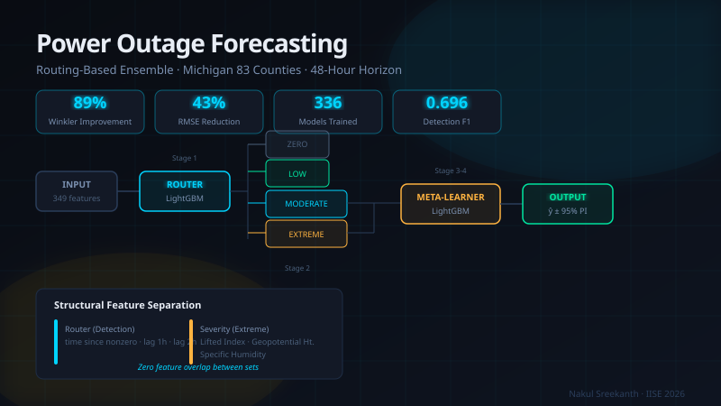
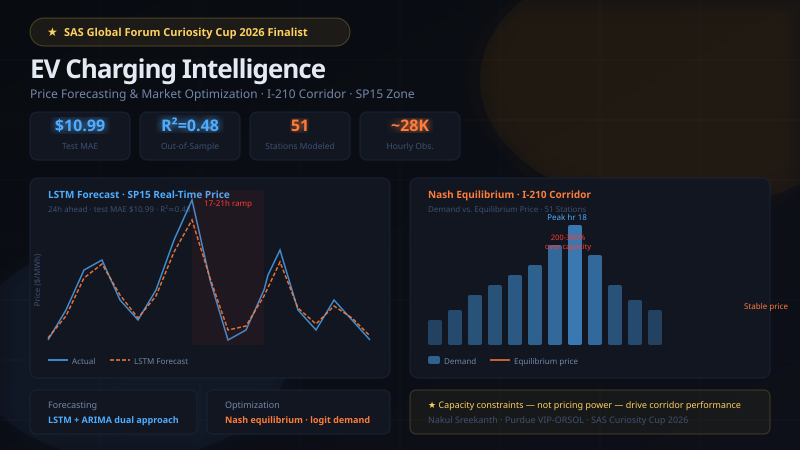
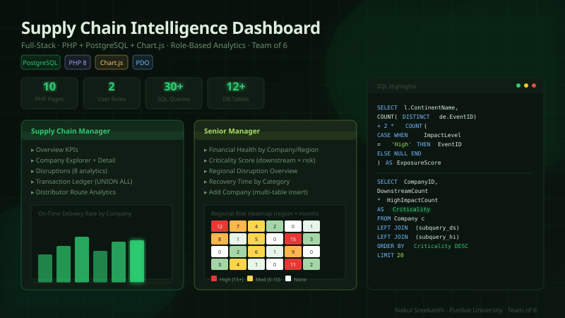
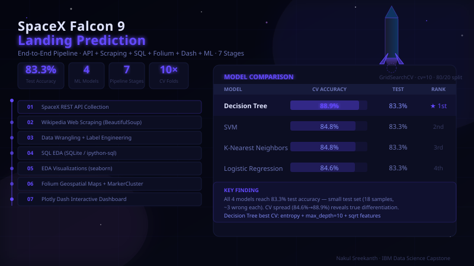
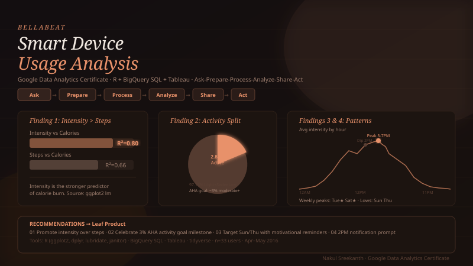
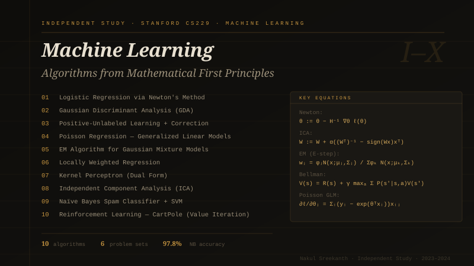

Building predictive systems where engineering rigour
meets statistical depth — from first-stage booster
landings
to grid-scale power outage forecasting.
End-to-end data science across forecasting, optimization, full-stack engineering, and business analytics.

Routing-based ensemble for 48-hour county-level outage prediction across Michigan's 83 counties. Four-stage architecture — routing classifier, regime-specific regressors, Bayesian tuning, meta-learner.

24-hour ahead electricity price forecasting (LSTM + ARIMA) combined with Nash equilibrium pricing optimization for 51 stations on California's I-210 corridor.

Full-stack role-based analytics platform for supply chain operations. Complex SQL (UNION ALL, criticality scoring, disruption exposure), Chart.js visualizations, two user roles. Team of 6.

End-to-end pipeline: REST API collection, Wikipedia scraping, SQL EDA, Folium geospatial maps, Plotly Dash dashboard, and four-model GridSearchCV comparison.

Business analytics case study (Google Data Analytics Certificate): Fitbit tracker usage patterns analyzed in R, BigQuery SQL, and Tableau to deliver marketing strategy recommendations.
Beyond coursework — self-directed deep study of graduate-level ML theory.
10 algorithms implemented from mathematical definitions: Logistic Regression (Newton's Method), GDA, PU Learning, Poisson GLM, EM/GMM, Locally Weighted Regression, Kernel Perceptron, ICA, Naïve Bayes, and CartPole Value Iteration. Self-directed study in evenings and weekends over roughly a year using Stanford's open-sourced course materials.

I'm an Industrial Engineering student at Purdue University with a focus on data science, machine learning, and operations analytics. My IE background means I approach data problems with a systems mindset — not just "what model fits?" but "what decision does this enable, and what are the operational constraints?"
I've deliberately sought out technical depth beyond what my degree provides: self-studying Stanford's CS229 to understand ML from mathematical first principles, and applying those foundations to real problems in energy markets, supply chain operations, and infrastructure analytics through Purdue's VIP-ORSOL initiative.
I work primarily in Python and R for modeling, SQL for data infrastructure, and have built production-facing web applications in PHP/PostgreSQL. I'm interested in roles where rigorous statistical thinking meets real operational decision-making.